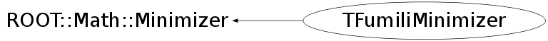

class TFumiliMinimizer: public ROOT::Math::Minimizer
TFumiliMinimizer class implementing the ROOT::Math::Minimizer interface using TFumili. This class is normally instantiates using the plug-in manager (plug-in with name Fumili or TFumili) In addition the user can choose the minimizer algorithm: Migrad (the default one), Simplex, or Minimize (combined Migrad + Simplex)
Function Members (Methods)
public:
| TFumiliMinimizer(int dummy = 0) | |
| virtual | ~TFumiliMinimizer() |
| static TClass* | Class() |
| virtual void | ROOT::Math::Minimizer::Clear() |
| virtual bool | ROOT::Math::Minimizer::Contour(unsigned int, unsigned int, unsigned int&, double*, double*) |
| virtual double | ROOT::Math::Minimizer::Correlation(unsigned int i, unsigned int j) const |
| virtual double | CovMatrix(unsigned int i, unsigned int j) const |
| virtual int | CovMatrixStatus() const |
| virtual double | Edm() const |
| double | ROOT::Math::Minimizer::ErrorDef() const |
| virtual const double* | Errors() const |
| virtual bool | ROOT::Math::Minimizer::GetCovMatrix(double*) const |
| virtual bool | ROOT::Math::Minimizer::GetHessianMatrix(double*) const |
| virtual bool | ROOT::Math::Minimizer::GetMinosError(unsigned int, double& errLow, double& errUp, int = 0) |
| virtual double | ROOT::Math::Minimizer::GlobalCC(unsigned int) const |
| virtual bool | ROOT::Math::Minimizer::Hesse() |
| virtual TClass* | IsA() const |
| bool | ROOT::Math::Minimizer::IsValidError() const |
| unsigned int | ROOT::Math::Minimizer::MaxFunctionCalls() const |
| unsigned int | ROOT::Math::Minimizer::MaxIterations() const |
| virtual const double* | MinGradient() const |
| virtual bool | Minimize() |
| virtual double | MinValue() const |
| virtual unsigned int | NCalls() const |
| virtual unsigned int | NDim() const |
| virtual unsigned int | NFree() const |
| virtual ROOT::Math::MinimizerOptions | ROOT::Math::Minimizer::Options() const |
| double | ROOT::Math::Minimizer::Precision() const |
| int | ROOT::Math::Minimizer::PrintLevel() const |
| virtual void | ROOT::Math::Minimizer::PrintResults() |
| virtual bool | ProvidesError() const |
| virtual bool | ROOT::Math::Minimizer::Scan(unsigned int, unsigned int&, double*, double*, double = 0, double = 0) |
| void | ROOT::Math::Minimizer::SetDefaultOptions() |
| void | ROOT::Math::Minimizer::SetErrorDef(double up) |
| virtual bool | SetFixedVariable(unsigned int, const string&, double) |
| virtual void | SetFunction(const ROOT::Math::IMultiGenFunction& func) |
| virtual void | SetFunction(const ROOT::Math::IMultiGradFunction& func) |
| virtual bool | SetLimitedVariable(unsigned int ivar, const string& name, double val, double step, double, double) |
| virtual bool | ROOT::Math::Minimizer::SetLowerLimitedVariable(unsigned int ivar, const string& name, double val, double step, double lower) |
| void | ROOT::Math::Minimizer::SetMaxFunctionCalls(unsigned int maxfcn) |
| void | ROOT::Math::Minimizer::SetMaxIterations(unsigned int maxiter) |
| void | ROOT::Math::Minimizer::SetOptions(const ROOT::Math::MinimizerOptions& opt) |
| void | ROOT::Math::Minimizer::SetPrecision(double prec) |
| void | ROOT::Math::Minimizer::SetPrintLevel(int level) |
| void | ROOT::Math::Minimizer::SetStrategy(int strategyLevel) |
| void | ROOT::Math::Minimizer::SetTolerance(double tol) |
| virtual bool | ROOT::Math::Minimizer::SetUpperLimitedVariable(unsigned int ivar, const string& name, double val, double step, double upper) |
| void | ROOT::Math::Minimizer::SetValidError(bool on) |
| virtual bool | SetVariable(unsigned int ivar, const string& name, double val, double step) |
| virtual bool | SetVariableValue(unsigned int ivar, double val) |
| virtual bool | ROOT::Math::Minimizer::SetVariableValues(const double* x) |
| virtual void | ShowMembers(TMemberInspector& insp) |
| int | ROOT::Math::Minimizer::Status() const |
| int | ROOT::Math::Minimizer::Strategy() const |
| virtual void | Streamer(TBuffer& b) |
| void | StreamerNVirtual(TBuffer& b) |
| double | ROOT::Math::Minimizer::Tolerance() const |
| virtual int | ROOT::Math::Minimizer::VariableIndex(const string&) const |
| virtual string | ROOT::Math::Minimizer::VariableName(unsigned int) const |
| virtual const double* | X() const |
protected:
| static double | EvaluateFCN(const double* x, double* g) |
| static void | Fcn(int&, double*, double& f, double*, int) |
private:
| TFumiliMinimizer(const TFumiliMinimizer&) | |
| TFumiliMinimizer& | operator=(const TFumiliMinimizer& rhs) |
Data Members
protected:
| int | ROOT::Math::Minimizer::fDebug | print level |
| unsigned int | ROOT::Math::Minimizer::fMaxCalls | max number of function calls |
| unsigned int | ROOT::Math::Minimizer::fMaxIter | max number or iterations used to find the minimum |
| double | ROOT::Math::Minimizer::fPrec | precision |
| int | ROOT::Math::Minimizer::fStatus | status of minimizer |
| int | ROOT::Math::Minimizer::fStrategy | minimizer strategy |
| double | ROOT::Math::Minimizer::fTol | tolerance (absolute) |
| double | ROOT::Math::Minimizer::fUp | error scale |
| bool | ROOT::Math::Minimizer::fValidError | flag to control if errors have been validated (Hesse has been run in case of Minuit) |
private:
| vector<double> | fCovar | |
| unsigned int | fDim | |
| double | fEdm | |
| vector<double> | fErrors | |
| TFumili* | fFumili | |
| double | fMinVal | |
| unsigned int | fNFree | |
| vector<double> | fParams | |
| static TFumili* | fgFumili | static instance (used by fcn function) |
| static ROOT::Math::BasicFitMethodFunction<ROOT::Math::IBaseFunctionMultiDim>* | fgFunc | |
| static ROOT::Math::BasicFitMethodFunction<ROOT::Math::IGradientFunctionMultiDim>* | fgGradFunc |
Class Charts
{kind=link}
{kind=link}
{kind=link}
{kind=link}

Function documentation
void SetFunction(const ROOT::Math::IMultiGenFunction & func)
Set the objective function to be minimized, by passing a function object implement the basic multi-dim Function interface. In this case the derivatives will be calculated by Fumili
void SetFunction(const ROOT::Math::IMultiGradFunction & func)
Set the objective function to be minimized, by passing a function object implement the multi-dim gradient Function interface. In this case the function derivatives are provided by the user via this interface and there not calculated by Fumili.
void Fcn(int& , double* , double& f, double* , int )
double EvaluateFCN(const double* x, double* g)
function callaed to evaluate the FCN at the value x calculates also the matrices of the second derivatives of the objective function needed by FUMILI
bool SetVariable(unsigned int ivar, const string& name, double val, double step)
set a free variable.
bool SetLimitedVariable(unsigned int ivar, const string& name, double val, double step, double , double )
set a limited variable.
bool Minimize()
perform the minimization using the algorithm chosen previously by the user By default Migrad is used. Return true if the found minimum is valid and update internal chached values of minimum values, errors and covariance matrix.
unsigned int NDim() const
this is <= Function().NDim() which is the total number of variables (free+ constrained ones)
{ return fDim; }unsigned int NFree() const
number of free variables (real dimension of the problem) this is <= Function().NDim() which is the total
{ return fNFree; }double CovMatrix(unsigned int i, unsigned int j) const
return covariance matrices elements
if the variable is fixed the matrix is zero
The ordering of the variables is the same as in errors